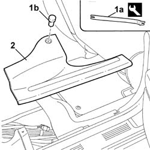
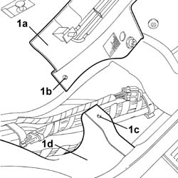

7040L44 RUNNING BOARD for REAR DOOR HOUSING (one) left or right - R.R.
- Path
- Procedures > 70 FITTINGS > 7040 BODY INTERIOR UPHOLSTERY AND TRIM > 7040L PASSGNER COMPARTMENT FLOOR COVERING > 7040L44 RUNNING BOARD for REAR DOOR HOUSING (one) left or right - R.R.
- Kind
- repair procedure (removal / refitting; the operation number is the code)
- Applies to
- all engines; all production periods
- Interactive page
- https://sloeber94.github.io/elrnDB-lThss/en/#/80514
Applies to: all engines; all production periods
 Removing
Removing
 Refitting
RefittingSee in Op. 7050A20 Single rear seat cushion - R.R.
1. Release the retaining plug (1a) using the tool (1a).
 | Description | Code | Function |
|---|---|---|---|
1a | Knife | 1.878.077.000 | Removing rear door running board |
2. Release the running board and remove it.

Applies to: all engines; all production periods
Refitting
Removing1. Fit the running board (1a) centering the pin (1b) in relation to the opening (1c) in the wheel arch liner (1d).

Applies to: all engines; all production periods